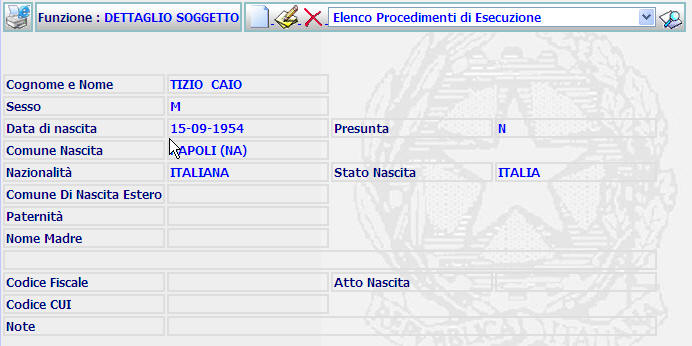
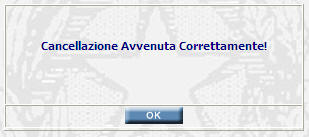
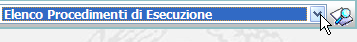
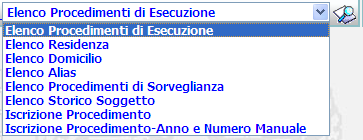

GENERALITA'
DETTAGLIO SOGGETTO: La funzione, consente di visualizzare i dati di dettaglio di un soggetto che è stato inserito nel sistema ed effettuare su di esso alcune operazioni.
LE MASCHERE VIDEO
La funzione in esame viene realizzata attraverso l'utilizzo della seguente maschera che riporta gli elementi descrittivi e operativi dei dati del soggetto:

COME FARE PER ...
| Per iscrivere un nuovo soggetto, l'utente deve: |
Cliccare sul pulsante
; si aprirà la maschera di inserimento soggetto che permette di iscrivere un nuovo soggetto.
| Per modificare i dati inseriti relativi al soggetto, l'utente deve: |
Cliccare sul pulsante
; si aprirà la maschera modifica soggetto che permette di effettuare le modifiche volute.
| Per cancellare il soggetto e tutti i dati relativi l'utente deve: |
Cliccare sul pulsante
; verrà visualizzato il seguente messaggio:

a) Cliccando sul pulsante
 si annullerà
l'operazione di cancellazione e si ritornerà alla pagina di dettaglio del
soggetto.
si annullerà
l'operazione di cancellazione e si ritornerà alla pagina di dettaglio del
soggetto.
b) Cliccando sul pulsante
 il sistema visualizzerà
il seguente messaggio
il sistema visualizzerà
il seguente messaggio

c) Cliccando sul pulsante
 il sistema visualizzerà
la maschera relativa alla funzione ricerca
soggetto
il sistema visualizzerà
la maschera relativa alla funzione ricerca
soggetto
|
Per lanciare l'esecuzione di funzioni correlate alla maschera di dettaglio soggetto l'utente deve agire sul menu a tendina |
a)Posizionarsi con il mouse in corrispondenza di:

b)Cliccare con il bottone sinistro del mouse;
A questo punto si aprirà e verrà visualizzata la lista delle funzioni che è possibile attivare contestualmente a quella che si è appena utilizzata:

b) evidenziare la funzione che si desidera attivare
c) Cliccare sul pulsante

CAMPI
Nella maschera non sono presenti campi digitabili.
PULSANTI
Nella maschera sono presenti i pulsanti
 ,
,
 ,
,
 ,
,
 che fanno parte del gruppo di
pulsanti di "Uso Comune"
che fanno parte del gruppo di
pulsanti di "Uso Comune"
BOTTONI
Oltre ai comandi funzionali relativi al menù verticale non sono presenti comandi.